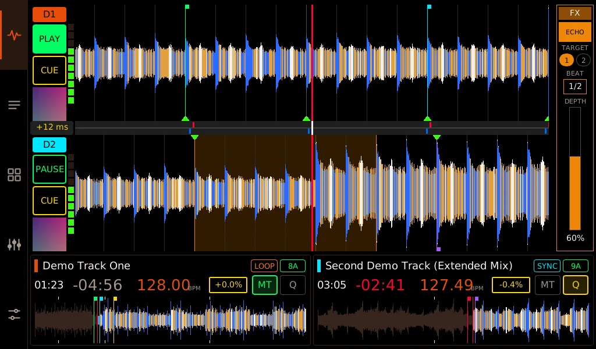
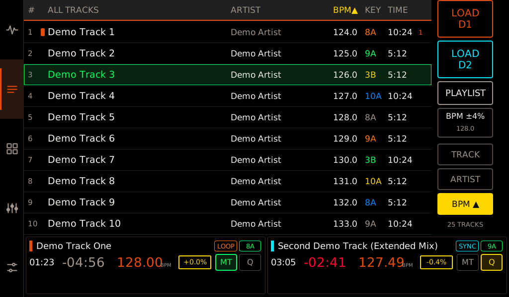
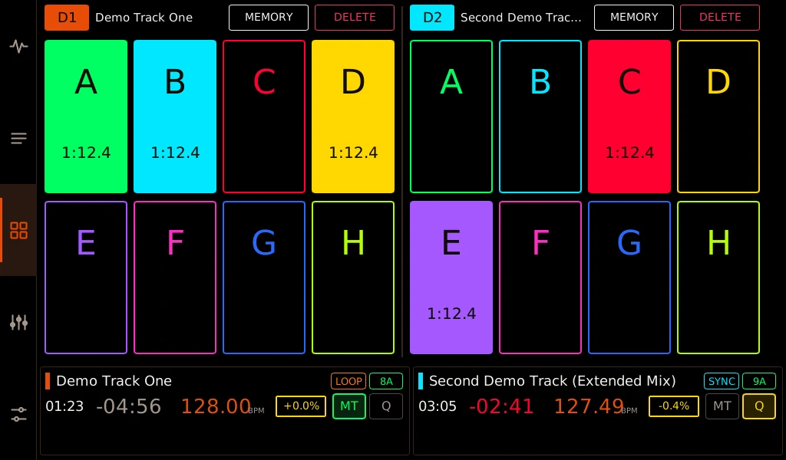
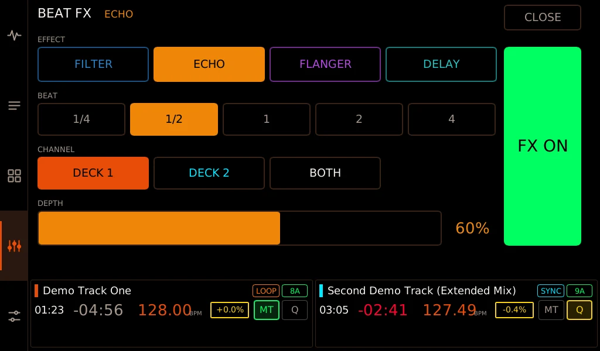
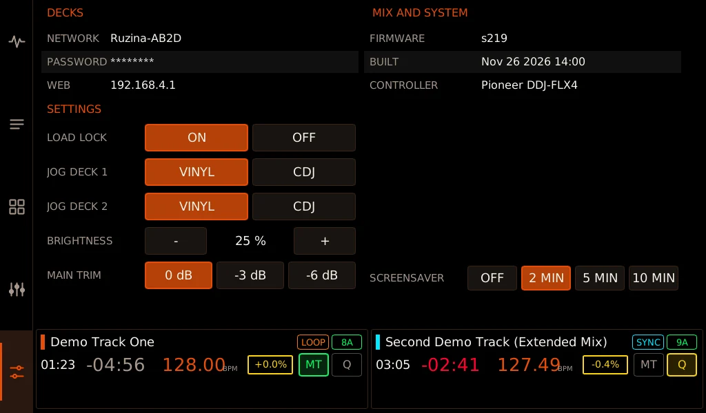
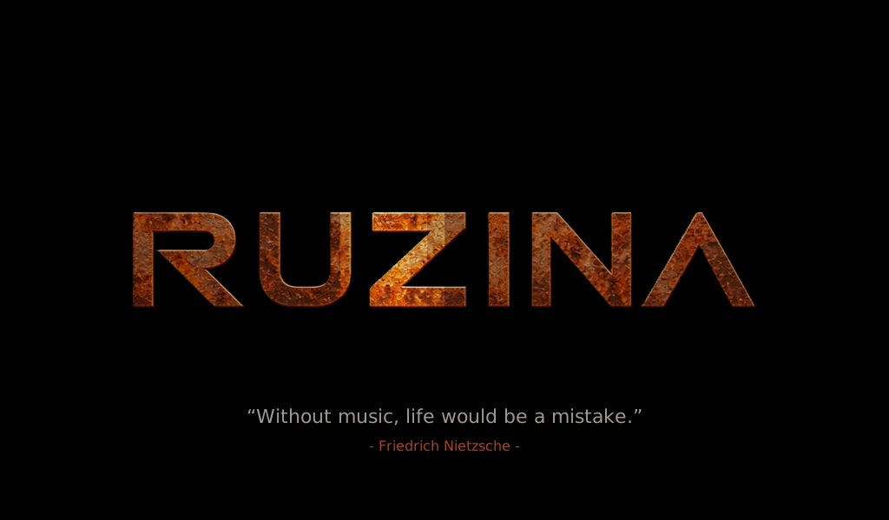
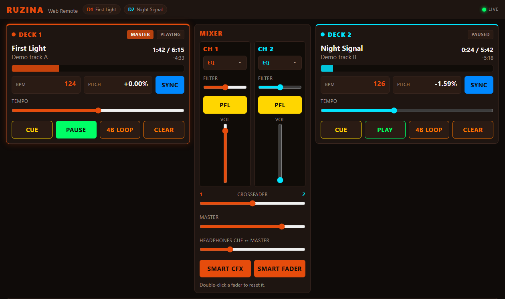
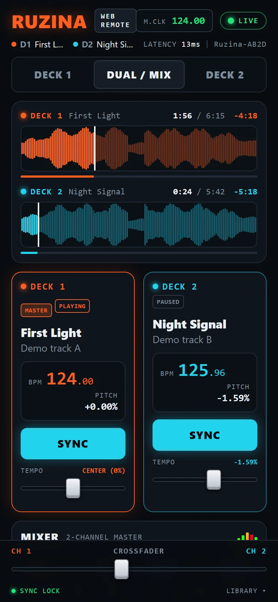
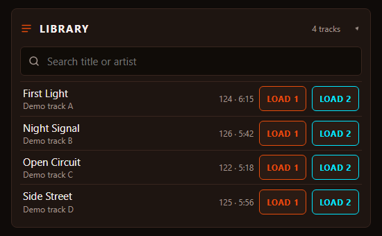
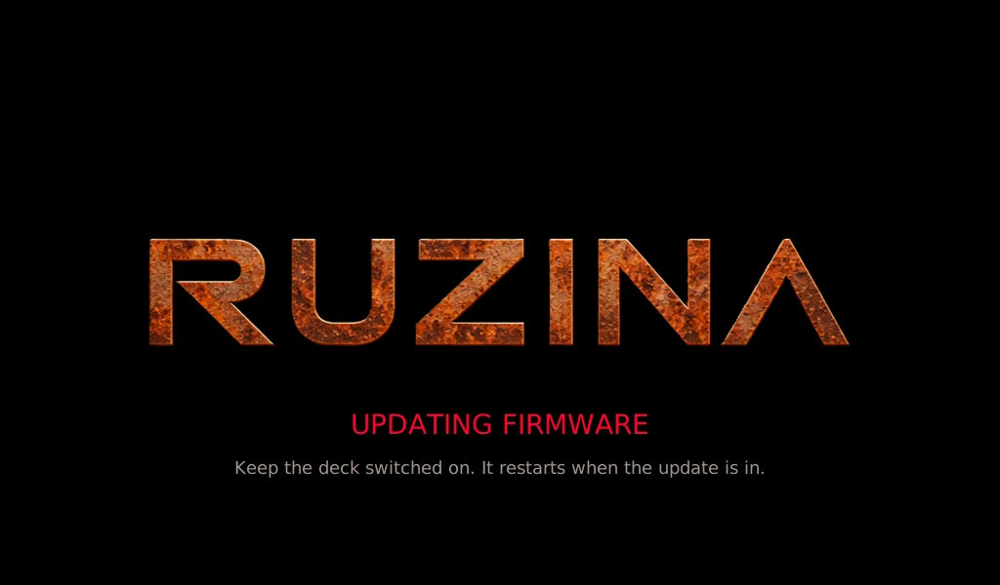

Quick start
This guide is for the JC1060P470C_I_W_Y with ESP32-P4 silicon revision 1.3 (103) and the matching Ruzina firmware already installed. It covers the build with the Slint touchscreen and a USB drive as its music source.
- Prepare two tracks. Analyze them in rekordbox and export them to an exFAT USB drive with the classic Device Library database. USB export instructions
- Connect your equipment. Plug the DDJ-FLX4 and USB drive into a hub connected to the JC1060’s HS port. Connect your speakers and headphones to the FLX4 with their levels turned down. Connection diagram
- Start Ruzina. Power the board through its FS USB-C port. Wait for the startup screen and library scan to finish. Open LIBRARY, select a track, then press LOAD for deck 1.
- Check both outputs. Center the crossfader, raise channel 1’s fader, press PLAY, and slowly bring up the volume. To check the headphones, turn HEADPHONES MIX toward MASTER and raise HEADPHONES LEVEL. Headphone cueing and your first mix
Equipment and connections
- Guition JC1060P470C_I_W_Y rev 1.3 with compatible Ruzina firmware.
- Pioneer DDJ-FLX4 with a USB data cable for its computer or mobile-device port.
- USB hub and an exFAT USB drive with a rekordbox export.
- Powered speakers or an amplifier with a line input, a stereo RCA cable, and headphones.
The computer supplies power to the board through FS USB-C.
- DDJ-FLX4
- exFAT USB drive
Use the HS port for both the controller and the music drive.
- RCA MASTER to a line input
- Headphones to the headphone jack
Prepare a USB drive
- Use a USB drive formatted as exFAT. If you need to format it, back up any existing files first because formatting erases the drive.
- Import your music into the desktop version of rekordbox and analyze it. For your first test, pick two local MP3, FLAC, or 16-bit PCM WAV files. Check their BPM and beatgrids if you plan to use SYNC or Quantize.
- In EXPORT mode, export tracks or a playlist to the USB drive. Ruzina reads the classic Device Library. On your computer, check that the drive contains
PIONEER/rekordbox/export.pdb. OneLibrary, formerly Device Library Plus, can coexist with that database. - Keep the folder structure created by rekordbox. Ruzina uses the database to locate the music and analysis files at their exported paths. Safely eject the drive when the export finishes.
- Plug the drive into Ruzina’s hub. In LIBRARY, check that your tracks and playlists appear, then load one track onto each deck.
The rekordbox export links the tracks in the library to their audio files. If BPM, beatgrids, cue points, or cover art are missing, check that those items were available in the export. Official rekordbox USB export guide
Screen and library
- OVERVIEW
- Shows both decks with their waveforms in rekordbox’s three-band colors and a red playhead, available cover art, position, time, BPM, and pitch, with markers for beats, cues, and loops. The track overviews show Hot Cues as flagged lines, and the strip between the two waveforms shows each deck’s beats, deck 1 in red and deck 2 in blue. The time remaining blinks red in a track’s last 30 seconds, the key appears in green, and a tag beside the title shows SYNC, LOOP, or EMPTY. It has touchscreen PLAY and CUE controls, Master Tempo and Quantize indicators, and a Beat FX panel. On this build, turning the browse knob on the Overview zooms the waveforms.
- LIBRARY
- Shows all tracks, folders, and playlists from the export, ten rows per page. A track row can display its artist, BPM, key, and duration, plus a D1 or D2 label when loaded. Tap a column heading, or TRACK, ARTIST, or BPM on the right, to sort the list; tap again to reverse it. BPM ±4% shows only tracks within 4 percent of the playing deck’s tempo. A key is green when it fits the playing deck’s key, yellow for +2, and blue for +7.
- HOT CUES
- Eight Hot Cue slots per deck, A through H, and a list of imported Memory Cues.
- SETTINGS
- Device settings, firmware and controller information, playback diagnostics, and Wi-Fi credentials. With Wi-Fi, DEFAULT beside WI-FI PASSWORD restores the network password the firmware was built with.




Browse and load with the DDJ-FLX4
| Control | Result |
|---|---|
| Press the browse knob outside the library | Opens LIBRARY. Hold SHIFT to open the playlist view or retain a folder or playlist that was already open. |
| Turn the browse knob inside LIBRARY | Moves the selection one row per detent. Hold SHIFT to move ten rows at a time. You can also tap a row to select it. |
| Press the knob on a folder or playlist | Opens the selected item. On the screen, tap the selected row again to open it. Pressing the knob on a track returns to the Overview. |
| SHIFT + browse knob press | Goes up one level. From the top-level playlist view, it returns to all tracks. |
| On-screen PLAYLIST | Opens the playlist view from all tracks, and from inside a folder or playlist goes straight back to the playlist view. In the playlist view, tap it again to return to all tracks. It is lit green while you are in the playlists and grey when the drive has no playlists. |
| LOAD for deck 1 or deck 2 | Loads the selected track onto that deck. If you selected a folder or playlist, LOAD opens it first. With LOAD LOCK enabled, a playing deck refuses a replacement track. |
To load from the touchscreen, select a track and tap LOAD D1 or LOAD D2. Before pressing PLAY, check that the title appears on the intended deck.
First mix and headphones
- MAIN / MASTER
- The audience hears the stereo mix through the FLX4’s RCA MASTER output. Its level depends on the channel faders, crossfader, MASTER LEVEL, and MAIN TRIM.
- PFL / HEADPHONES CUE
- The mixer’s channel CUE button selects that channel for pre-fader listening. HEADPHONES MIX blends the selected PFL channels with MASTER. HEADPHONES LEVEL adjusts the overall headphone volume.
- Transport CUE
- The CUE button beside PLAY controls the deck’s cue point and returns to it. Use the mixer’s channel CUE to preview a deck in your headphones.
- Load the first track onto deck 1. Leave channel 2’s fader down. With the crossfader centered, start deck 1, raise its channel fader, and bring the speakers to a comfortable level.
- Load the next track onto deck 2. Turn on channel 2’s HEADPHONES CUE and move HEADPHONES MIX toward CUE. Turn off channel 1’s PFL to hear deck 2 by itself. Start deck 2. You should hear the next track in your headphones while the speakers continue to play deck 1.
- Line up the tempos and the start of a phrase. Move HEADPHONES MIX toward the center to compare the tracks. Use the tempo fader or SYNC and make small timing corrections with the jog wheel as needed.
- Gradually raise channel 2’s fader and lower channel 1’s. Listen for the rise in volume when both tracks are playing. If the Limiter counter in SETTINGS keeps climbing, reduce the channel levels or lower MAIN TRIM.
Deck 1 plays out
Blend the tracks
Deck 2 takes over
These are example fader positions with the crossfader centered. Adjust the overlap by ear.
Audience
Leave channel 2 down while you prepare the next track.
Headphones
Enable channel 2’s PFL and turn HEADPHONES MIX toward CUE.
Tempo, jog wheels, and loops
Tempo, BEAT SYNC, and Master Tempo
- The tempo fader changes playback speed. On the FLX4, briefly press SHIFT + BEAT SYNC to cycle through the 6, 10, and 16 percent ranges. The range changes when you release the button.
- BEAT SYNC toggles tempo following. With both decks playing and a beatgrid on each track, Ruzina can align their beat phase too. If either beatgrid is missing, it matches tempo when BPM data is available. Phase alignment may wait until you release the jog wheel or exit a loop.
- Continuous SYNC follows tempo changes on the reference deck within the supported range. To return to manual tempo control, move the following deck’s tempo fader or press SYNC again.
- Master Tempo (MT) preserves pitch while you change tempo. Tap MT on the Overview or hold SHIFT + BEAT SYNC for about one second on that deck.
Jog wheels, Quantize, and Beat Jump
- In VINYL mode, touch the top of the jog wheel to hold or scratch the track. Turn its edge to briefly speed up or slow down playback. In CDJ mode, playback continues when you touch the top. Set the mode for each deck in SETTINGS.
- Quantize uses the analyzed beatgrid when setting cue points and loop starts. On the FLX4, use SHIFT + channel CUE in the mixer to toggle it for that channel. The Q indicator on the Overview shows each deck’s setting. If cues land on the wrong beat, check the beatgrid in rekordbox and export again.
- BEAT JUMP pads move the playhead by a set number of beats while preserving its position within the beat. Use them to skip part of a phrase.
In this example, the playhead is closer to beat 3, so Quantize places the new cue there.
Loops
Press 4 BEAT/EXIT on the FLX4 to start a four-beat loop or exit an active loop. To set boundaries manually, press IN at the start and OUT at the end. In BEAT LOOP mode, choose the length with a pad. The waveform shows the active boundaries. After you exit, playback continues through the loop end.
Cue points and effects
Hot Cues and Memory Cues
- Load a track and open HOT CUES or select HOT CUE mode on the FLX4. Tap or press an empty A–H slot to set a cue at the playhead. Tap or press a populated slot to recall its cue.
- To delete a Hot Cue, tap DELETE on the appropriate side of the touchscreen, then tap the populated slot. On the FLX4, press SHIFT + pad in HOT CUE mode. Ruzina saves cue edits on the device. Pause both decks and leave the device on for a few seconds to let it save.
- To recall a cue imported from rekordbox, tap it in the MEMORY list. On the FLX4, select SAMPLER for that deck. Pads 1–8 recall cues 1–8. Hold SHIFT for cues 9–16. The deck stays in its current play or pause state. Recalling a Memory Loop activates the loop.
To carry cue edits to other players, make the edits in rekordbox and export the media again.
- A
- B
- C
- D
- E
- F
- G
- H
- Set · Tap an empty pad.
- Recall · Tap a saved pad.
- Delete · Use DELETE on the screen or SHIFT + pad on the FLX4.


Beat FX and Pad FX
On the Overview, tap the FX panel to the right of the waveforms. Choose Filter, Echo, Flanger, or Delay, then choose a beat value from ¼ to 4 and a target (deck 1, deck 2, or both). Set DEPTH and press FX ON. Start with a low depth and raise it by ear. CLOSE returns to the Overview. Device validation status for effects and channel selection
For Pad FX, select PAD FX mode on the FLX4 and use a pad to trigger its assigned effect. Check the Beat FX target and on/off state before transitioning between tracks.


Device settings
| Setting | What it does |
|---|---|
| LOAD LOCK | ON prevents accidentally loading a new track onto a playing deck. OFF allows replacement while playing. Ruzina defaults to ON. |
| JOG DECK 1 / 2 | VINYL (default) enables scratching. In CDJ mode, touching the top of the jog wheel leaves playback running. |
| BRIGHTNESS | The − and + buttons change brightness in five-percentage-point steps between 10 and 50 percent. The default is 25 percent. |
| MAIN TRIM | 0, −3, or −6 dB. Adjusts MAIN gain before the limiter. Use HEADPHONES LEVEL for headphone volume. |
| SCREENSAVER | OFF, 2, 5, or 10 minutes. The default is 2 minutes. Playback keeps the screen awake. When the screensaver is visible, the first touch, button or pad press, or jog or browse knob movement wakes the screen. Faders and mixer knobs continue to affect the mix. |
Changes take effect during use. The device saves them to flash after both decks are paused and the settings have been idle for a few seconds. Pause both decks and give the device time to save before powering it off.
For troubleshooting, see Controller, Firmware, Built, and ELF. SETTINGS also shows audio buffer and underrun counters.




Web Remote
With Wi-Fi enabled, Ruzina creates its own local network. The Web Remote controls the physical decks. Audio plays through the FLX4.
- On Ruzina, open SETTINGS and look for Wi-Fi and Password.
- On your phone or computer, join the displayed network and enter the password. If your device reports that the network has no internet access, choose to stay connected.
- Enter
http://192.168.4.1in your browser’s address bar. The page shows both decks, the mixer, and the library. - Open LIBRARY, search by title or artist, and load the track onto the intended deck. Check the load confirmation or rejection message.
- Each deck shows its waveform overview. Tap the overview to jump to that point in the track. The deck card shows the tempo, the pitch, SYNC, and the tempo fader. Under each deck are HOT 1–HOT 8, CUE, PLAY, 4B LOOP, and CLEAR. A Hot Cue pad lights in its cue color when it holds a cue. Tap an empty pad to set a cue there.
- The mixer offers EQ knobs, filters, channel meters and faders, PFL, MASTER, headphone mix, and SMART CFX and SMART FADER. To turn a knob, drag it up or down. Double-tap a knob or fader to reset it. The crossfader stays at the bottom of the screen. Check the control positions if several people are using the remote.
- The page works with the phone upright or turned sideways. Turned sideways, deck 1, the mixer, and deck 2 sit side by side. Use DECK 1 or DECK 2 at the top to show only one deck, or DUAL / MIX to show both.
- SETUP, the fourth tab, holds the device settings from the SETTINGS page (LOAD LOCK, jog mode per deck, brightness, MAIN TRIM, and screensaver), the device information, and the list of controller profiles. Changes take effect on the device at once and are saved like changes made on the touchscreen.
- Under WI-FI PASSWORD in SETUP, enter a new password of 8 to 63 characters and press SAVE. Stop both decks first. Connected phones drop and must join again with the new password. The network name stays the same.






Media and firmware
Changing the USB drive and shutting down
- Pause both decks. If you edited settings or Hot Cues, wait a few seconds for the device to save them.
- Turn down the outputs before shutting down or changing connections. To shut down normally, disconnect USB power from the board.
- If you unplug the drive while the device is running, LIBRARY shows MEDIA REMOVED and both decks are cleared. When you plug the USB drive back in, Ruzina reads its library again without restarting.
- Wait for the library to return and load your tracks again.
Updating the firmware from the Web Remote
- Get a firmware file ending in
.ddjotathat is made for your board. Ruzina accepts only files signed with the Ruzina key. - Stop both decks. Open the Web Remote, select SETUP, and under FIRMWARE UPDATE choose the file and press INSTALL. The page shows the upload’s progress, which takes one to two minutes.
- While the file is written, the screen shows UPDATING FIRMWARE and the controller’s audio stops. Do not disconnect power.
- Ruzina then restarts into the new firmware. Your phone may need to join the Wi-Fi network again. The new firmware is kept once the Web Remote answers again. If it fails to start, Ruzina returns to the previous firmware at the next restart.
- In SETTINGS or SETUP, check the Firmware version and the slot it runs from.
If the page reports that both decks must stop first, stop them and try again. A file that is not signed for this board is refused, and Ruzina keeps its current firmware.


Updates and recovery over USB
Before selecting a firmware image, record the board model, ESP32-P4 silicon revision, and the Firmware, Built, and ELF values in SETTINGS. Check the development status and choose an image for that silicon revision and the intended music source. USB and SD use separate builds.
Before flashing over USB, make a verified backup of the existing flash and prepare a recovery procedure for your device. The maintainer documentation covers build selection, partition layout, and recovery verification. Deck screen builds · JC1060 recovery
Troubleshooting
The library is empty or playlists are missing
Check that the exFAT USB drive is in the hub on the HS port and contains the classic PIONEER/rekordbox/export.pdb. Under Devices in rekordbox, check that your tracks and playlists appear in Device Library. Start with a small export of two familiar tracks and wait for the library scan to finish.
A track is listed but LOAD does not load it
Check whether you selected a track or a folder. Pause the destination deck if LOAD LOCK is enabled. If the issue affects one track, export it again and check its audio format. In the Web Remote, note the message shown after the attempt.
The FLX4 responds, but the speakers are silent
Check that playback is active and the position is moving. Check the channel fader, crossfader, MASTER LEVEL, and speaker or amplifier input. The RCA cable should come from the FLX4 MASTER output. Check the controller name in SETTINGS.
The headphones play the wrong deck or are silent
Turn on HEADPHONES CUE for the channel you want. Turn HEADPHONES MIX toward CUE to preview the chosen channel or toward MASTER to hear the output mix. Bring up HEADPHONES LEVEL slowly. To hear deck 2 by itself, turn off deck 1’s PFL.
Audio crackles or drops out
Start with one familiar track and turn off effects. Reduce levels if the Limiter counter climbs quickly. If the problem occurs with both decks playing, note the file formats, Master Tempo state, active effects, and open screen. Check whether the underrun counters in SETTINGS increased. If both USB devices are also missing, check the connections, cables, and hub power against the connection diagram.
The Web Remote does not open
Check that your phone stays connected to the Wi-Fi network shown in SETTINGS. Enter the full address with http://. After a restart, wait for the network to return and try again. If SETTINGS has no Wi-Fi information, check that your Ruzina build includes Wi-Fi.
A control seems unresponsive after a period of inactivity
If the screen displays the RUZINA wordmark, the first tap or press wakes the screen. Repeat the action after it wakes. If a physical fader stops responding after Web Remote use, move it to the displayed value to take control again.
The screen stays dark or the FLX4 is missing
Turn down the outputs, then check power on the FS USB-C port and the hub connection on HS. Start the board with the BOOT button released and wait for the startup screen. Check Controller in SETTINGS. If it reads none, check that you have a data cable and that it is connected to the FLX4 port for a computer or mobile device.
Report an issue
Include your board and controller models, firmware version and ELF prefix, media type and format, steps to reproduce, and expected and actual results. Add a photo of the screen or underrun counts if available. Remove the password shown in SETTINGS before sharing. GitHub Issues
Compatibility and status
| Equipment or build | Status |
|---|---|
| JC1060 rev 1.3 + DDJ-FLX4 | Tested on hardware with the ESP-IDF build, a USB drive, and RCA MAIN and headphones on the FLX4. Validation of individual features depends on the exact firmware image. |
| DDJ-400 and Numark DJ2GO2 Touch | Controller profiles are present. Playback and control validation with physical units on this board is pending. |
| Hercules DJControl Inpulse 500 | The controller profile and USB audio are present: 44.1 kHz, with the controller mixing its own headphones. Connect it directly to the HS port, without a hub. Hardware validation is pending. |
| Traktor Kontrol S2 MK3 | The controller profile and USB audio (USB Audio 2.0) are present. Connect it in MIDI mode by holding the left FLX button while plugging it in. Hardware validation is pending. |
| Native esp-hal build | Separate compile-checked target for ESP32-P4 revision 3.2 (302) or newer. The rev 1.3 instructions cover the ESP-IDF build. |
| JC8012P4A1C_I_W_Y | Separate development target. Hardware qualification is pending. |
| External DAC for MAIN | Planned. The setup covered here uses the FLX4 for MAIN and headphones. |
See the development documentation for individual firmware images, listening checks, and longer test runs. Development status · Additional controller profiles · S2 MK3 and Inpulse 500 audio